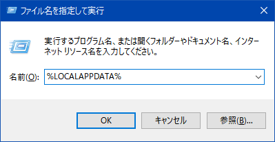
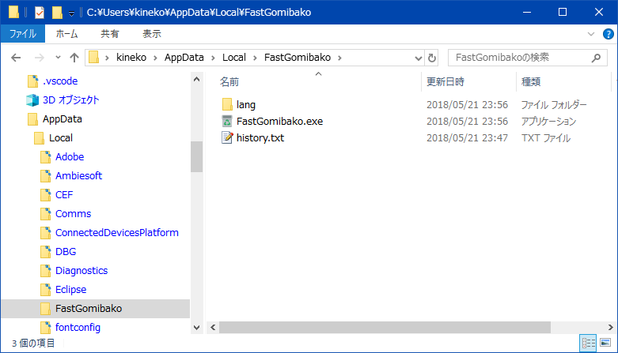
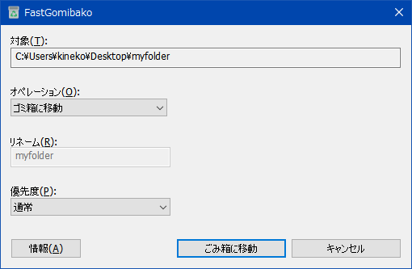
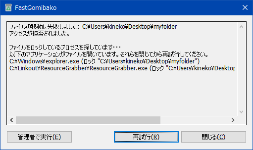

削除したいフォルダが大きいフォルダの場合、削除するのに時間がかかって、次の作業に進めないことがあります。このアプリは対象フォルダを移動したあと削除するため、すばやく次の作業に映ることができます。ただしごみ箱からもとに戻すときに、元の位置には戻らなくなりますのでそこま注意が必要です。「送る」メニューなどに置いて使ってください。
インストール
インストーラーはありません。ダウンロードしたファイルは7zの自己解凍書庫です。ダブルクリックして起動して解凍するか、7zを使って解答してください。 解答したファイルを適当なフォルダに置いてください。ここではユーザのローカルの場所に移動する方法を紹介します。- [Ctrl]+Rで実行ダイアログを表示し、%LOCALAPPDATA%と入力してOKします。

- 解凍したファイル（フォルダ一式）をこの場所に移動して開きます。

- FastGomibako.exeを選択してコピーします。
- [Ctrl]+Rで実行ダイアログを表示し、shell:sendtoと入力してOKします。
- 「送る」メニューの一覧を含むフォルダが表示されるので、何もないところを右クリックして、ショートカットの貼り付けを選択します。
- ショートカットが作成されるので名前をFastGomibakoに変えます。
実行
リネームや削除したいフォルダやファイルを右クリックして送るメニューからFastGomibakoを選択します。
削除失敗時のプロセス検索
削除やリネームに失敗したときで、他のプロセスがそのファイルを使っている場合、当該プロセスを突き止める機能が起動します。
もしここにプロセスが表示されれば、そのプロセスがファイルを使っているので、このプロセスを閉じてから再試行すれば削除できます。ダウンロード
こちらから行えます。Assetsの実行ファイルをダウンロードしてください。ベータ状態のファイルはこちらにあります。寄付
開発の寄付を募集しています。詳しくはこちらをご覧ください。